research
Con(Knit)uous Rubble
Awarded the Best Paper Award at the CAADRIA 2026 conference in Taiwan

- context
- ITECH Masters Thesis
- year
- 2025
- type
- research
With the accelerating rate of demolition and the growing urgency to circulate materials at their highest value, this research proposes a novel reuse strategy for one of the most common building materials and demolition waste contributors: concrete. It explores the use of unprocessed concrete rubble in a dry, continuous, seamless container-based granular system, avoiding the need for energy-intensive processing, binders, or mortars.
This system enables both a simple assembly and disassembly process, and builds on existing container-based approaches for reused rubble. It features a horizontal, seamless, continuously knitted container using a circular knitting machine end-effector, incrementally filled with rubble. The container system is deposited along planar, curved toolpaths in a layer-by-layer sequence, which resembles large-scale additive manufacturing. The workflow was developed through a series of material, fabrication and design experiments, which resulted in the successful deposition of concrete waste into self-supporting, compression-only architectural forms.
The architectural forms have been explored through a set of physical experiments including straight and overhanging columns, arches, walls and a ruled surface. The resultant forms demonstrate overhangs up to 25°, bridging spans up to 20cm and a higher compressive capacity than previous container and rubble-based systems, attributed to the seamless container nature. These physical experiments show high deformation due to settlement, limiting vertical loading applications, and layer misalignment causing slip, hindering lateral stability. To address this, a sensor-based digital feedback loop is developed using image segmentation and time-of-flight data to monitor the jamming and layer height during fabrication. The final demonstrator– an arch with 1.3m opening height, 0.6m span with variable curvature– confirms the feasibility of the system and concludes design, fabrication and material developments.
Further explorations on alternative fibre materials, bio-based binders and/or infill materials are required to address the environmental degradation of the fibre, as well as weatherproofing of the system for inhabitable applications. The jamming and compaction technology needs to be further improved to expand the range and robustness of structural applications.
Overall, this research has established a foundation for additive manufacturing with low-grade unprocessed rubble for geometrically varying, compression-only architectures with unsupported overhangs, and a possibility for full disassembly.
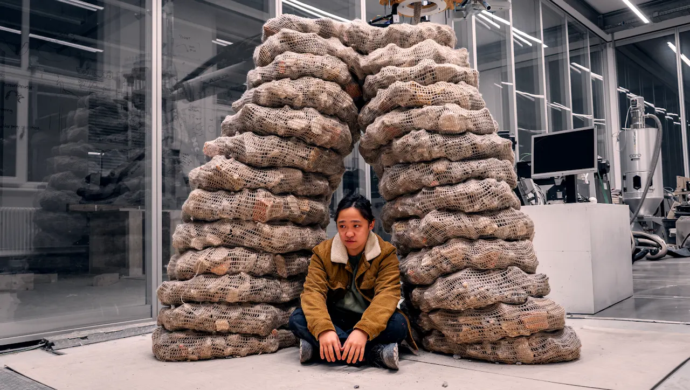

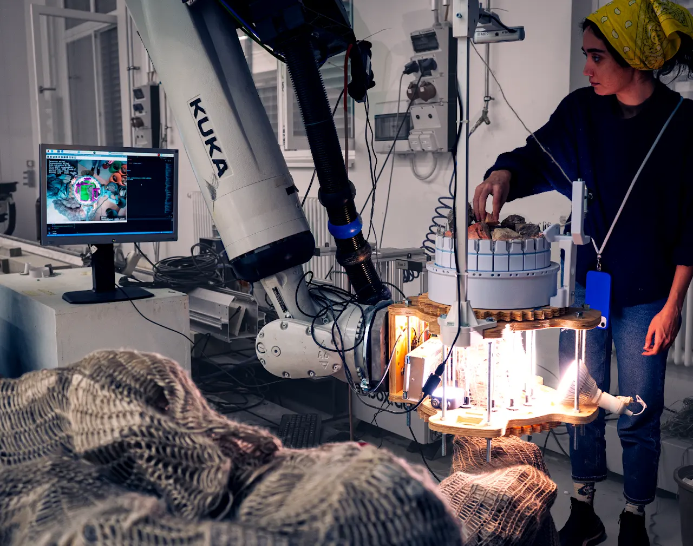

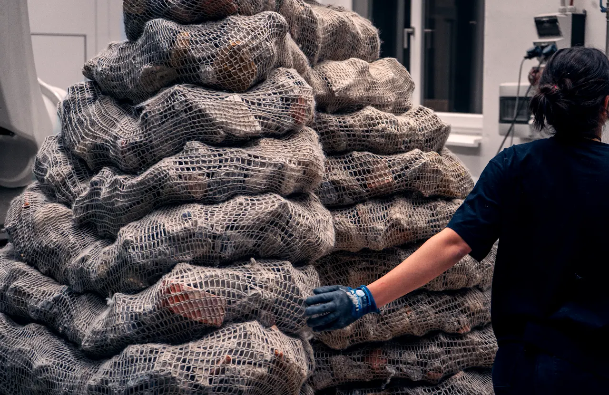
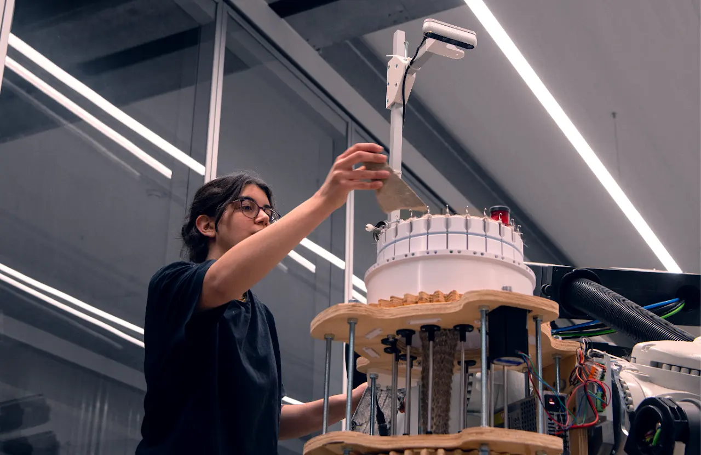
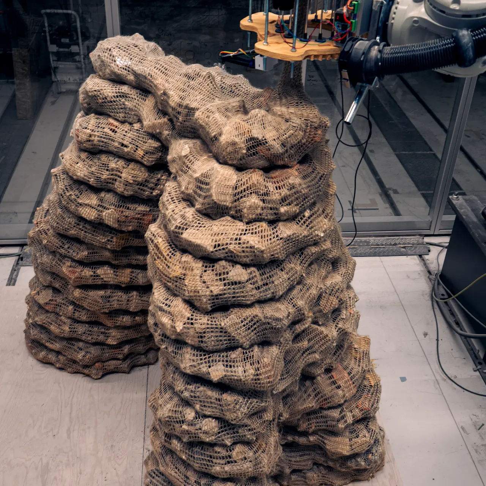
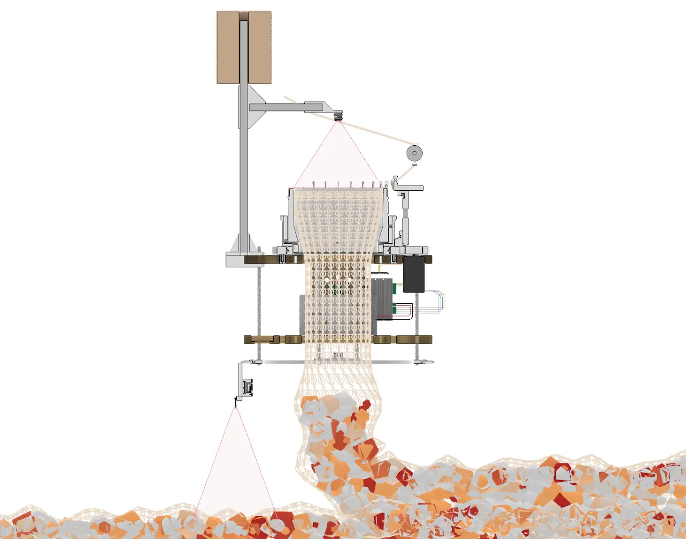
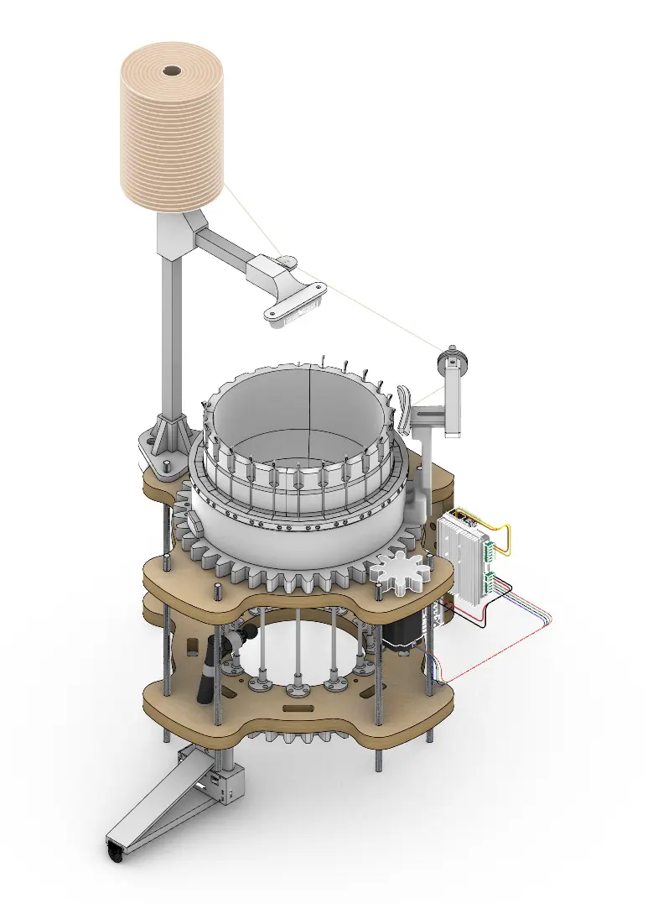
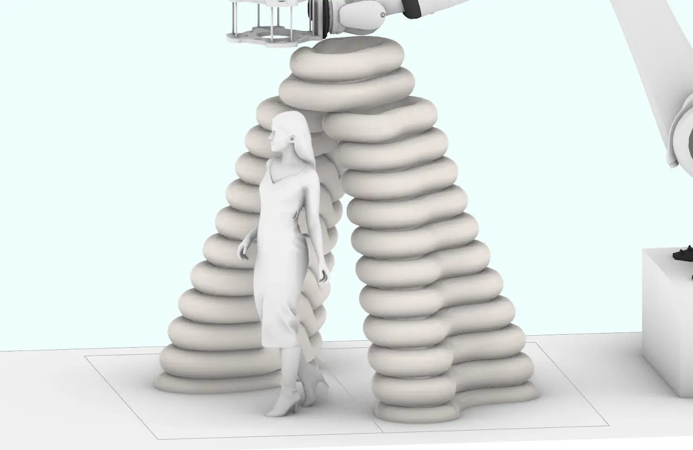
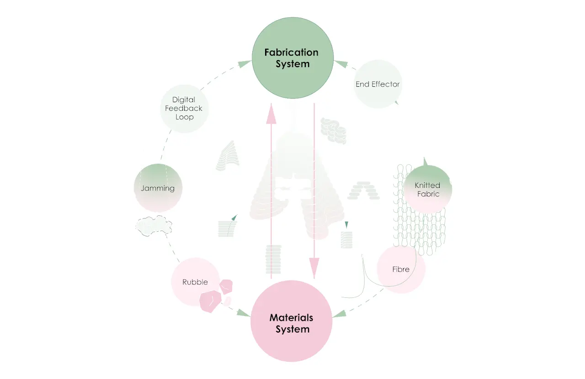
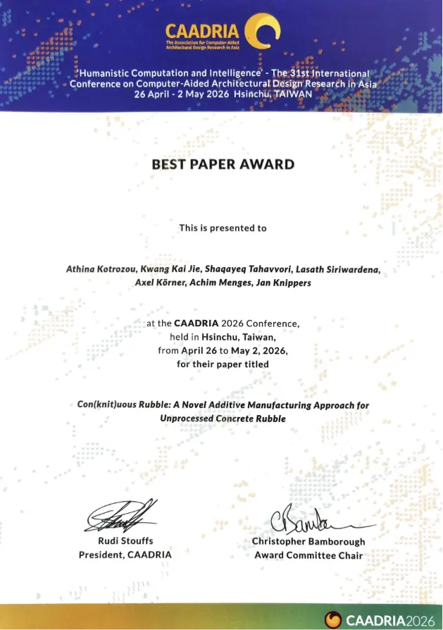
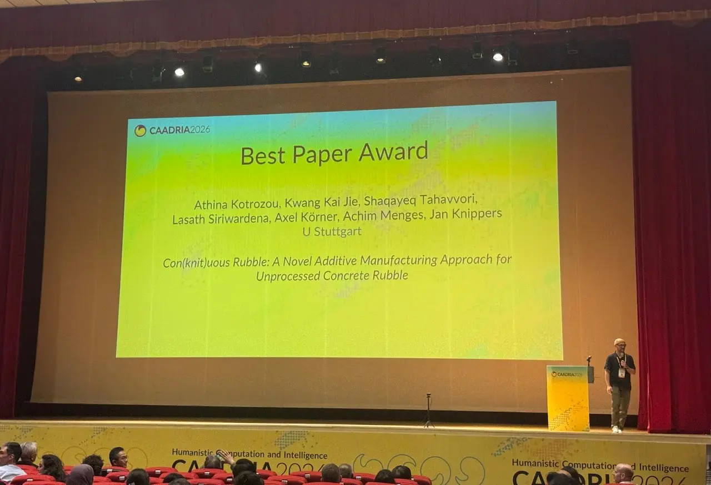